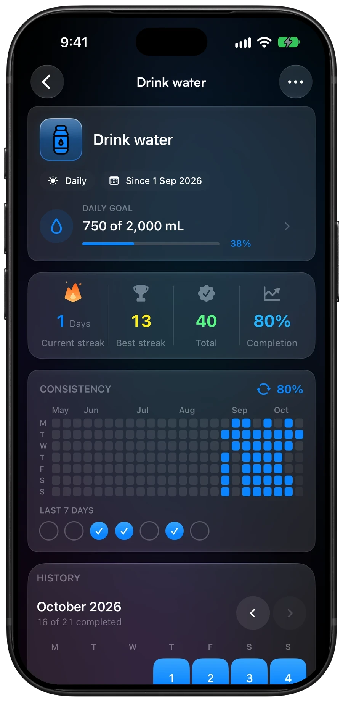
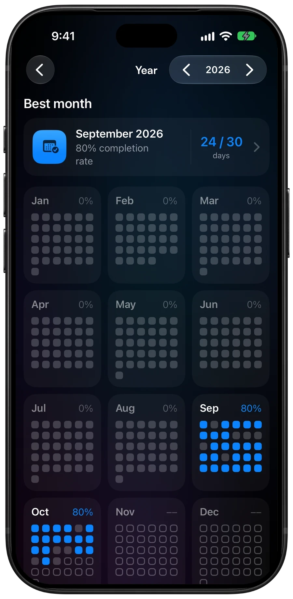
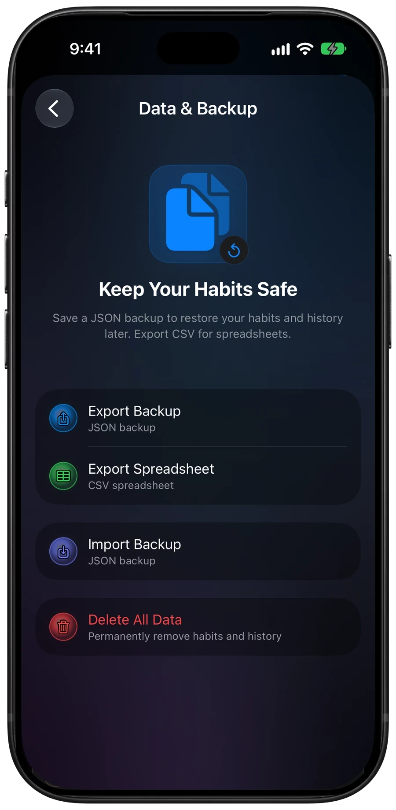

Choose a habit, see what counts, and make your first check-in.
Find help with reminders, widgets and Siri along the way.
Quit habits
For something you're stopping, like smoking or late-night snacking. Every day
counts as on track unless you log a slip, so you only open the app when
something goes wrong.
Slips, Monday to Thursday
0
Your streak
4 days
Four finished days without a slip. Each one counts.
Today stays open
Today counts once it's over, so a bad evening can still go in. Want it on the
board now? Tap the check-in button on the card and choose
Stayed On Track.
Didn't open the app? Coming in 1.6
That's not a missed day. For a quit habit, the only way to miss a day is a slip,
and only you can log one. A day you didn't answer counts as on track.
Logging a slip
Tap the check-in button, choose Had a Slip, add a note if it helps,
and save. The streak starts again the next day. Every day before the slip stays
in your history.
Fixing an earlier day
Open the habit and tap any day in its history to change it.
Clear Check-In takes a logged slip back off, and that day counts as
on track again.
From a reminder or the widget
Quit habits get one daily reminder, without repeats or follow-ups. Tapping it,
or the habit on a widget, opens the check-in. Nothing gets logged for you.
Limit habits Coming in 1.6
For something you want to cut back on rather than stop, like no more than 2
coffees a day. Set a Daily Limit when you create the habit and log each
one. A day only counts against you once you go over.
Within your limit
2 coffees
Over your limit
3 coffees
With a daily limit of 2, only the third coffee takes you over.
Logging one
Tap + on the card to open Log Occurrences, step the count up,
add a note if it helps, and save. The card shows where you are, like
1 / 2 within limit.
Today stays open
Being at or under the limit only counts once the day is over, so a third coffee
at night still goes in. Going over counts straight away and ends the streak. Every
day before it stays in your history.
Didn't log anything?
A day with nothing logged is zero, which is within any limit. Like a quit habit,
you only miss a day by going over.
Changing the limit
Edit the habit to change it. The new limit starts today, and earlier days keep the
limit they had, so tightening it doesn't rescore last week.
Fixing an earlier day
Open the habit and tap any day in its history to set that day's total.
From a reminder or the widget
Limit habits get one daily reminder, without repeats or follow-ups, and it still
comes on days you've logged some. Tapping it, or the habit on a widget, opens
Log Occurrences.
Time habits
Track how long you spend on something. Set a goal per day, like 30 minutes of
stretching, or per week, like 3 hours of guitar. A weekly goal adds up every
minute you log that week, however you spread it.
Sessions this week
3
Weekly goal met
3 hours
45 minutes, then 1 hour 15 minutes, then 1 hour. It all adds up.
Logging a session
Tap the button on the card to open the time log, set the time in minutes or
hours, and tap Add.
A daily goal completes once the full time is in.
A weekly goal's streak counts weeks, and the week you're in can't break it
before it ends.
Logged too much?
Tap Adjust to undo the last log, remove 5, 15 or 30 minutes, remove a
custom amount, or reset today. A day holds up to 24 hours.
Missed a session? Coming in 1.7
Tap an earlier day in the habit's History to add the time to that day.
Adjust works there too, and today's total stays as it was.
From a reminder or the widget
A reminder or widget tap opens today's time log, since only you know how long
it took.
Counter habits Coming in 1.7
Count anything with a number: reps, kilometres, pages, words. Pick a unit, set a
goal per day, like 50 push-ups, or per week, like 20 km of running, and log as
you go. Everything you log adds up.
Runs this week
3
Weekly goal met
20 km
8 km, then 3.5 km, then 8.5 km. Decimals add up too.
Choosing a unit
Pick reps, sets, kilometres, miles, kilograms, pounds, pages, words or servings,
or choose Custom and type your own, like laps. Changing the unit later
keeps the numbers you've logged, so 5 km switched to miles reads 5 mi.
Logging
Tap the button on the card to open Log Progress, set the amount, and
tap Add. The steps fit the unit: one rep at a time, or half a
kilometre. A daily goal completes once the day's total reaches it.
Per day or per week
Set Goal Period to Per Week and everything you log that week counts,
however you spread it. Days with something logged fill in on the week, and the
streak counts weeks.
Logged too much?
Tap Adjust to undo the last log, remove a custom amount, or reset the
day. Resetting asks first and keeps your notes and other days.
Missed a day?
Tap an earlier day in the habit's History to add to that day or fix it.
Adjust works there too, and today's total stays as it was.
From a reminder or the widget
With a daily goal, tap Complete on a reminder or + on the
widget to log without opening the app. HabitGlass adds one reminder's share of
the goal, like 17 of 50 reps over 3 reminders, or just what's left. Once the goal
is met, those taps don't add anything. A weekly goal has no share to guess, so
the tap opens Log Progress instead.
Water
Set a daily goal and a reminder schedule. HabitGlass splits your goal into
one sip per reminder, so each check-in brings you closer to a full bottle.
Daily goal
2,000 mL
Each reminder
≈160 mL
13 hourly reminders, from 7:30 am to 7:30 pm, split the goal into sips.

Today’s amount, goal and history on one screen.
Logging a sip
Log Water opens with 160 mL ready, one reminder's share. Tap
Add 160 mL and the card goes 1/13,
2/13 and so on, or nudge the amount first in 50 mL steps.
Finish a 500 mL bottle and it jumps 3 ticks at once.
The last tick fills when you reach 2,000 mL. The bottle's badge turns green
and reads Goal Met. The day is done and reminders
stop, but you can still log more.
Logged too much?
Tap Adjust, or the amount inside the bottle, to remove 100, 250 or
500 mL, remove a custom amount, or reset today. Resetting asks first and keeps
your notes and earlier days. To change the goal itself, edit the habit.
From a reminder or the widget
Tap Complete on a reminder or + on the widget to log a sip
without opening the app. HabitGlass adds 160 mL, one reminder's share of your
2,000 mL goal, or just what's left if you're closer than that. Once the goal is
met, those taps don't add anything.
Reading
Reading splits a daily goal of pages or minutes into one tick per reminder, like
water does. Set 30 pages a day with 6 reminders and each tick is 5 pages. Read
12 pages and you're on 2/6. The day completes at 30.
Daily goal
30 pages
Each tick
5 pages
Six reminders split your daily goal into six ticks.
Reading by the clock
Set a minutes goal and log the time you read. Pages are optional, so you don't
have to move your bookmark. If you finish a book halfway through the day, its
pages still count after you start the next one.
From a reminder or the widget
A reading reminder or widget tap opens the reading log, so you can say exactly
how much you read. Nothing gets checked off for you.
Apple Health Coming in 1.6
Link a habit to Apple Health and it checks itself off once Health shows the goal
met. Pick one reading: steps, active energy, exercise minutes or workouts. Apple
Health habits are part of Pro.
Daily step goal
10,000
When Health reaches it
Day done
7,400 steps in the morning and 2,600 in the evening complete the day.
Setting one up
In the habit, tap Tracking and choose Apple Health.
Pick a reading and set your daily goal.
For workouts, choose which types count, or leave it on Any Workout.
Read what HabitGlass needs, then allow access in Health.
Health asks for that reading only. Every matching workout that day adds up, so two short runs can make one goal.
When it checks off
As soon as the numbers reach Health. A Watch can take a while to sync, so
HabitGlass looks again at the last two days too. It also works with the app
closed, but Health stays locked while your iPhone is, so sometimes the tick only
lands when you next open the app.
Progress and completion alerts Coming in 1.6
Apple Health reminders can show your latest reading and goal, such as
6,240 of 10,000 steps as of 4:10 PM. In the habit's Apple Health
settings, turn on Notify When Done to get an alert when you reach
your goal. It can take up to an hour.
Checking in by hand
Left the Watch at home? Tap the check-in button as usual. The card says
checked in by hand next to what Health has so far. Health only ever
adds check-ins, so it never takes yours back.
From a reminder or the widget
Reminders come at the times you set, 7 pm for a new habit, and stop once Health
shows you're done. There are no repeats or follow-up nudges, since a locked
iPhone can't always tell in time. Complete on a reminder, or a widget
tap, checks the day in by hand.
Your Health data
HabitGlass only reads, and only on your iPhone. Readings are never saved, synced
to iCloud or put in backups. What syncs is the check-in itself, like any other.
To change access, open the Health app, tap your profile picture, then Apps.
If Pro ends
The habit and its history stay, and you check it in by hand. You can switch it to
any other tracking type.
Reminders
Every habit can remind you once a day for free. Pro adds more times, your own
words, and reminders that repeat or follow up.
Free
1 time
Pro
Up to 6
Reminder times per day. Pro also adds custom text, repeats and follow-ups.
Free: one reminder a day Coming in 1.7
Turn on Remind me in the habit and pick a time. It goes off on each day
the habit is scheduled, and stays quiet once that day is done. A weekly or monthly
goal stays quiet once you've met it, until the next week or month starts.
Pro: several set times Coming in 1.6
Tap Add Time for up to 6 times a day, like 8 am and 10 pm for brushing
your teeth. With more than one time, each reminder is one check-in, so two
times means the day is done after two. Once it's done, the rest stay quiet.
Pro: your own words Coming in 1.6
Write what the reminder says, like "Floss too", under
Reminder Text. It shows on every reminder for that habit. Leave it
empty and HabitGlass writes its own.
Pro: repeats and follow-ups
Repeat reminds you every 30 minutes to 4 hours between two times,
which suits water. Follow-up nudges send up to 5 more after the day's last
reminder if you haven't finished, and stop as soon as you do.
Quit and limit habits
Quit and limit habits get one daily reminder, without repeats or follow-ups. With
Pro you can still write its text.
Apple Health habits Coming in 1.6
Apple Health habits keep every set time you add, but the day still takes one
check-off, and there are no repeats or follow-ups. Each reminder stops once Health
shows the goal met.
If Pro ends
Your reminders keep coming. Each habit gets its first time with HabitGlass's own
text, and a habit set to repeat gets one daily reminder. Your other times and
your text stay saved, and come back if you subscribe again.
Schedules and streaks
A schedule decides which days count for a habit. Set it when you create or edit
the habit, under Repeat.
Choose a schedule
Daily counts every day from the habit's start date.
Days of Week lets you pick weekdays, such as Monday, Wednesday and Friday.
Times per Week sets a target of 1 to 7 check-ins per week.
Every N Days repeats every 2 to 30 days.
More ways to repeat Coming in 1.6
Times per Month sets a target of 1 to 31 check-ins on any days in the month. The goal resets on the first.
Every Other Week repeats on the weekdays you choose, starting with the week of the start date.
Quarterly and Yearly repeat on your chosen start date. A short month uses its last day; February 29 uses February 28 in other years.
Once is due on the date you pick. Finish it to move it to Archived without losing its history.
Set the first day of the week in Settings, under General.
Weekly goals, calendars and streaks use that day as their boundary.
How streaks count
Streaks follow the schedule: a day that isn't due doesn't break a daily streak.
Weekly habits build a week streak by reaching their check-in target. Today stays
open until the day ends, so you have time to finish.
Monthly goals Coming in 1.6
A monthly goal builds a month streak. Home shows it under This month
until you reach the goal. Your check-ins count on any unpaused day in the month.
Home groups weekly habits under This week until their target is met.
Habits that aren't due today appear under Not today; finished habits
appear under Done.
Insights and widgets
Insights summarizes progress across habits. Choose 7 Days,
4 Weeks or 3 Months to change the period. Full Insights is
part of Pro and adds coaching, habit performance, a check-in calendar and a
consistency heatmap.
See your year Coming in 1.7
Tap View Year under the check-in calendar to see every month across
your habits, each day shaded by how much of it you got done, and your best month.
Tap a month or a day to open it in the calendar.
Add a widget
Today shows a checklist. Touch and hold it to choose which habits it lists.
Habit Focus shows the next habit due. Touch and hold it to pin one habit instead.
Habit Streak puts a habit's streak and today's progress on the Lock Screen.
Add a widget from the iPhone's Home Screen or Lock Screen edit controls. Tap a
habit in a widget to open it; check-in buttons work for habits that support a
direct check-in.
Siri and Shortcuts Coming in 1.6
Check off a habit, log water, or hear how today is going without opening
HabitGlass. Ask Siri, or build the same actions into a shortcut, an automation or
the Action button. All of it is free.
Your shortcut
Log Water
Added each run
250 mL
Set up the shortcut below, then say “Hey Siri, Log Water”.
Ask Siri
Say these with your own habit's name in place of Morning run:
“Check off Morning run in HabitGlass” completes the whole daily target. Saying it again leaves the day done.
“Log water in HabitGlass” asks how much, in millilitres. With more than one water habit, it asks which one too.
“Check today's progress in HabitGlass” tells you how many habits are left today.
“Check progress for Morning run in HabitGlass” tells you where that habit stands.
The same four are in the Shortcuts app under HabitGlass, ready to run.
Which habits work
Check Off Habit completes plain and Apple Health habits, so those are
the only ones it lists. Water takes an amount through Log Amount. Time,
reading, quit and limit habits still log in the app. Checking off an Apple Health
habit counts as checked in by hand, and nothing is written to Health.
Add to a counter Coming in 1.7
Log Count adds an amount to a counter habit in its own unit, like
20 reps or 5 km. Say “Log a count in HabitGlass”, or “Add to Push-ups in
HabitGlass”, and Siri asks how much. Each run adds more, even after the goal is
met.
Make a water shortcut
Open Shortcuts and tap +.
Search for Log Amount and add it.
Set the amount to 250 and leave the unit on Milliliters.
Pick your water habit.
Name the shortcut Log Water.
Tap play once. HabitGlass confirms that it logged 250 mL.
Now “Hey Siri, Log Water” adds a drink. Every run adds another 250 mL, even after
the goal is met. Leave the amount empty to be asked each time, or switch the unit
to Liters to log 0.25.
On the Action button or Lock Screen
On an iPhone with an Action button, open Settings, then Action Button,
swipe to Shortcut and pick Log Water. One press logs a drink. The
Shortcut control puts it in Control Center or on the Lock Screen too.
Check off with an NFC tag
Put a tag by your running shoes to check off Morning run with a tap. Your iPhone needs to support NFC automations.
In Shortcuts, open Automation and tap +.
Choose NFC and scan your tag.
Pick Run Immediately.
Add Check Off Habit and choose Morning run.
Other triggers work the same way: a time of day, arriving somewhere, a Focus, or
an Apple Watch workout.
Use your progress in a shortcut Coming in 1.7
Get Habit Progress returns Completed Today, Check-Ins Today, Daily
Target, Due Today, Paused, Weekly Goal Met and Monthly Goal Met. Put it in an
If action to build your own nudge, like a 6 pm automation that sends a
notification when Morning run isn't Completed Today. Weekly Goal Met and Monthly
Goal Met are separate from Completed Today for weekly and monthly habits.
Get Today's Progress returns Completed, Total and Remaining for the
habits due today, the same count as Home. Weekly and monthly goals come back
separately, and paused habits aren't counted.
For a quit habit, Completed Today means you checked in on track, and Slipped Today
means you logged a slip. A limit habit returns Logged Today and Daily Limit, like
1 / 2, and Slipped Today once you go over. Its Completed Today is
always off, since a day under the limit only counts once it's over.
Ideas to try
Put an NFC tag on your water bottle. Tapping it runs Log Amount with the bottle's size, like 500 mL.
Tag your toothbrush holder or yoga mat, and a tap checks off Floss or Stretch.
When an Apple Watch workout ends, check off Morning run.
When you arrive at the gym, check off Gym.
At 9 pm, run Get Today's Progress. If Remaining is more than 0, show a notification with how many are left.
When your iPhone goes on the charger at night, have Siri read out today's progress.
Set the Action button to Log Water, so one press logs a glass.
Add a shortcut to your Home Screen from its share menu, for a one-tap check-off next to your other apps.
When an action can't run
A deleted or archived habit needs picking again. A paused habit says so; resume it
in HabitGlass first. If HabitGlass can't save, the action tells you rather than
saying it worked. With your iPhone locked, iOS may ask you to unlock it first.
Year and notes Coming in 1.6
Habit details hold your month-by-month history. Open a habit to see its calendar,
add or edit a note on a day, and review the year without losing the daily view.

The Year view compares progress across months.
Review the year
Open a habit and scroll to its History.
Tap View Year to see the best month and a dot grid for each month.
Use the year controls to move through earlier years.
Tap a month or a day to return to that point in History.
The best month uses completion rate, or most check-ins for a weekly habit.
Add or change a day note
Tap a day in History to edit its check-in and note. Days with notes have a dot on
the calendar. Notes in the selected month appear in the Notes card;
tap a note there to edit it. Changing a check-in doesn't erase its note.
Pausing habits
Pause a habit for a trip, illness or another break. Its pause dates are excluded
from its schedule and streak, so the break doesn't count as missed progress.
Starting or changing a pause requires Pro; resuming or cancelling one is free.
Set a pause Coming in 1.6
Open the habit's menu and choose Pause Habit.
Choose the first and last paused days on the calendar.
Optionally turn on No End Date to keep the pause open.
Add a reason, such as Travelling, then tap Pause Habit.
The habit card and its details show the pause and reason while it is active.
Change or end a pause
Open the habit menu and choose Edit Pause to change its dates or reason.
Choose Resume Habit to end a running pause; days already paused stay
paused. For a pause that hasn't started, choose Cancel Pause to remove it.
Backups Coming in 1.6
Export a JSON backup before changing phones or to keep a copy of your habits and
history. Backups are free. CSV exports are for spreadsheets; they aren't restore
files.

Export and restore options live together in Data & Backup.
Save a backup
Open Settings, then Data & Backup.
Tap Export Backup and save or share the JSON file somewhere safe.
For a spreadsheet, choose Export Spreadsheet instead.
Export a fresh backup before each restore if you want a recent way back.
Restore a backup
In Data & Backup, tap Import Backup and choose a HabitGlass JSON backup in Files.
Review its habits, check-ins and history dates before restoring.
If you already have habits on this iPhone, tap Save Current Data First to export them, or cancel.
Tap Restore This Backup to replace the current habits and history.
Restore replaces data on this iPhone. If iCloud sync is on, changes can sync to
your other devices. Health readings aren't included in backups.
Something not adding up?
Send the habit's goal and schedule and the days you logged, and I'll work out what
the app did.